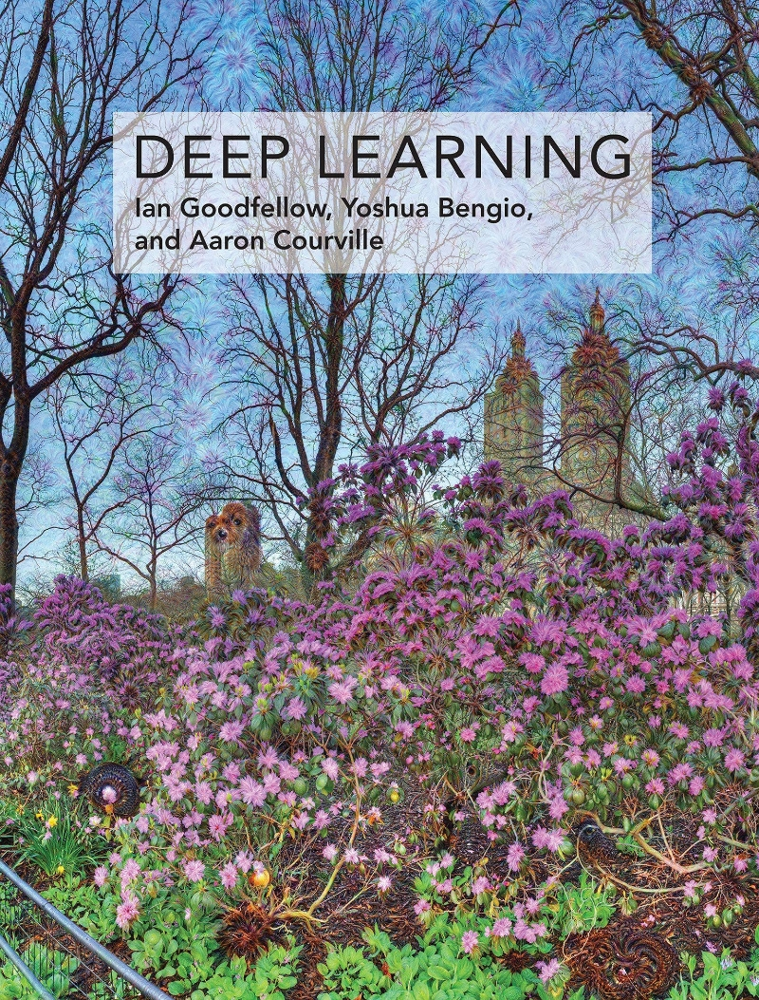

통계학, 그게 왜 중요한데?
한 마디로 잘 요약된 직접적인 답을 드릴 순 없겠지만, 간접적인 답을 드리고자 합니다.
DA/DS1 도메인에 계시는 분이라면 어디선가 통계학의 중요성을 강조하는 영상이나 아티클을 한 번 쯤은 보셨을거라 생각합니다. 통계학을 전공했던 학생이라 이런 이야기를 들을 때마다 기분이 좋긴 했지만, 통계학이 중요하다고 말하는 구체적인 이유에 대해 항상 궁금해하곤 했습니다. 그리고, 후술하겠지만 학부생때 통계학은 쓰레기라고 주장하는 모 유명대학 교수님의 의견을 듣고는, 통계학이 DA/DS라는 도메인에서 갖는 가치는 무엇인지 대해 고민하기 시작했죠.
Data Science에서 통계학은 중요한 위치를 차지한다. 예나 지금이나 중론이 되는 문장입니다. 왜 중요할까요? 한 마디로 잘 요약된 직접적인 답을 드릴 순 없겠지만, 제가 업무를 수행하며 통계학으로부터 배웠던 것들이 중요하다고 느낀 포인트들에 대해 정리하며 간접적인 답을 제시해드리려고 합니다. 통계학 전공으로 실무에 있으신 분들께는 공감의 포인트가 되는, 통계학 공부의 필요성을 느꼈으나 공부를 주저하고 있는 분들께는 확신을 줄 수 있는 글이 되었으면 합니다.
통계학이 쓰레기라고?
학부생 4학년 때니까 2018년이었던 것으로 기억합니다. 데이터산업진흥원에서 주관하는 <빅데이터 청년인재>라는 프로그램을 통해 모 대학에 종강 기간 동안 교육을 받고온 같은 과 친구가 제게 이런 말을 합니다.
통계학은 쓰레기래.
교육을 받았던 모 대학에서 소프트웨어 학과(a.k.a Computer Science) 교수님이 하신 말씀이라고 하더군요. 저 같은 경우는 원래부터 교수님 말이라고 100% 맹신하는 학생이 아니었기에 한 귀로 듣고 한 귀로 흘리긴 했지만, 우리나라에서 내로라하는 대학의 교수님이 했던 말이라 내심 신경이 쓰이긴 했습니다.
먼저, 이 말이 근거가 있을까에 대해 어떻게 알아볼 수 있을지에 대해 생각해봤어요. 그 결과, 딥러닝을 연구하고 있는, 컴싸 영역에서 알아주는 거인의 어깨를 빌려봐야겠다는 생각을 했습니다. Ian Goodfellow가 쓴 Deep Learning이라는 책(Goodfellow, Bengio, and Courville 2016)을 구매했죠. 딥러닝 책이지만 코드 한 줄 없이 이론적 설명에 집중한 책이랍니다.😨

이 책은 먼저 신경망 기반 알고리즘이 오랜기간 발전해 온 역사를 설명해주는 긴 Introduction을 한 뒤에, Chapter I에서 딥러닝을 이해하기 위해 갖추어야할 기본기들에 대해 정리해줍니다. Chaper I에서 선형대수, 확률 및 정보이론, 최적화, 머신러닝 기본2에 대해 차례대로 이야기해주는데, 이 부분이 무려 130여 페이지를 차지하죠. Introduction부터 Chapter I까지 공부하며 21세기에 딥러닝이 빛을 보기 시작한 이면에는 정말 많은 학문들의 융합이 필요했다는 것을 깨달았습니다. 다음은 Chapter I의 확률과 정보이론 섹션의 Introduction으로부터 일부 발췌한 내용입니다:
In artificial intelligence applications, we use probability theory in two major ways.
First, the laws of probability tell us how AI systems should reason, so we design our algorithms to compute or approximate various expressions derived using probablity theory.
Second, we can use probablity and statistics to theoretically anlayze the behavior of proposed AI systems.
Probability theory is a fundamental tool of many disciplines of science and engineering.
이정도면 앞서 “통계학은 쓰레기다.”라는 소프트웨어 학과 교수님의 의견에 우아한 반문이 될 거라 생각합니다. Ian Goodfellow가 그렇다는데 어쩌겠습니까? 이 맛에 거인의 어깨를 빌리는거죠.😂 아울러, 이 부분은 추후에 살펴본 바이지만 지금까지도 tabular data의 예측에 대장으로 자리잡고 있는 XGBoost 논문(Chen and Guestrin 2016)에서도 같은 논지의 의견을 얻을 수 있었습니다.
There are two important factors that drive these successful applications:
usage of effective (statistical) models that capture the complex data dependencies
scalable learning systems that learn the model of interest from large datasets.
통계학으로부터 배운 포인트들
이제 업무를 수행하며 통계학을 배우길 잘했다는 생각이 들었던 포인트들에 대해 본격적으로 이야기 해보겠습니다. 몇 가지 소주제로 나눠 내용을 정리해봤습니다.
EDA
전체 집합의 결과와 부분 집합의 결과는 다를 수 있다.
이는 심슨의 역설(Simpson’s Paradox)이라고 한다. 이해를 돕기 위해 신장결석 치료법에 관한 실제 의학 연구 사례를 하나 가져와 봤다.
출처: 위키백과 전체 그룹의 결과를 보면 마치 치료법 B가 더 좋아보인다. 그러나, 결석 크기를 given 시켜보면 결과는 반대로 나온다. 작은 결석과 큰 결석 두 경우 모두 치료법 A가 더 뛰어난 성공률을 보인다. 이러한 부분은 EDA를 할 때 뿐만이 아닌, 집계된 숫자를 볼 때에도 항상 유념해야한다.

출처: 위키백과 위 그림은 이러한 현상을 조심해야 하는 이유를 직관적으로 말해준다.
\(X\)와 \(Y\)의 상관(correlation)은 \(Z\)가 given될 경우 다를 수 있다.
단변량(univariate), 이변량(bivariate)으로 바라본 분석 결과는 다변량으로 바라볼 경우 결과가 달라 질 수 있다. 이러한 이유에서 EDA 후의 데이터에 관한 정교한 검증에는 결국 모델링이 필요로 된다.
통계학의 이런 부분들로부터 도움을 받았습니다:
Simpson’s Paradox
Conditional Probability
Conditional Distribution
실험설계, 결과 검정 및 해석
순수한 처리 효과(treatment effect)를 볼 수 있도록, 동시에 실험 비용을 최소화할 수 있도록 실험(Randomized Clinical Trials3, Online Controlled Experiments4)을 설계해야 한다.
설계한 실험 디자인에 따라 적절한 분석 방법론5을 활용해 실험 결과를 검정해야한다.
단, 실험 설계의 배경 및 목적에 따라 분석 방법론은 조금씩 달라 질 수 있다.
확보할 수 있는 Sample size가 매우 작다면 비모수적 검정 방법론을 사용하는게 좋다. 각 모수적 검정에 대응하는 비모수적 검정이 있다는 것을 참고하기 바란다.(e.g. Independent two-sample t-test -> Wilcoxon rank sum text)
이미 매출의 규모가 큰 충분히 성장한 서비스일수록 관측된 효과 크기(effect size)가 작아도, 이를 통계적으로 유의한 차이를 보이는 결과라고 결론을 내릴 수 있도록 충분히 큰 Sample size를 확보할 필요가 있다.
가령, 매출이 1조인 기업의 매출 1%를 개선하면 100억이 추가 리턴 되지만, 매출이 100억인 기업의 매출 1%를 개선하면 1억이 리턴된다. 같은 1%이지만 갖는 의미는 다르다. 전자와 후자에서 가져다주는 매출 개선의 양에는 큰 차이가 있으며, 후자에서 1% 개선에 비해 전자에서 1% 개선은 훨씬 어려울 것이다. 이에 따라 전자와 같은 상황에서는 1%의 차이라도 유의한 개선이라고 결론을 내릴 수 있는 실험을 설계할 줄 알아야 한다.
CVR을 생각해볼 수도 있다. buying conversion의 단위가 1만일 때와 1천일 때에 따라 CVR 1% 개선이 갖는 의미는 다르다. buying conversion의 단위를 1만, 객단가를 10만원으로 가정했을 때, buying conversion count의 1% 개선은 100번의 추가 구매가 리턴되어 약 1,000만원의 추가 매출을 가져다 주지만, buying conversion count의 단위가 1천일 때에는 10번의 추가 구매가 리턴되어 약 100만원의 추가 매출밖에 가져다주지 못한다. 앞선 예와 마찬가지로 CVR이 1% 개선되는 것은 같지만 우리에게 가져다주는 매출 변화의 양은 다르다.
중심극한정리6에 관한 올바른 이해
중심극한정리는 기본적으로 “표본평균”의 “분포”에 관한 정리이다. 중심극한정리에 의해 우리는 Sample size가 충분히 크면 모집단의 형태에 관계없이 표본평균의 분포는 정규분포로 근사함을 보일 수 있다.
수리통계학 관점에서 얘기하면 표본평균의 분포 수렴(convergence in distribution)에 관한 이야기라 할 수 있다.
더 우아하게 줄여보면 표본평균의 극한분포(limiting distribution)에 관한 이야기라 할 수 있다.
이에따라, 정규분포를 따르는 표본평균에 기반한 통계량들로 진행되는 수많은 가설검정들은 중심극한정리에 기대어 편하게 진행할 수 있게 된다.
- 예를 들어, 모분산(\(\sigma^2\))에 관한 정보가 없는채로 모평균에 관한 검정을 진행할 때 사용하는 t-test를 생각해보자. 여기서는 t-분포를 따르는 t-통계량을 검정통계량(test statistics)으로 사용하게 되는데, 사실 t-통계량은 정규분포를 따르는 통계량을 적절히 조합하여 정의되는 통계량에 해당한다. 이에따라, 우리는 Sample size가 충분히 크기만 하면 별다른 정규성 검정없이 중심극한정리에 기대어 t-test를 수행할 수 있게 된다.
참고로 중심극한정리는 “해당 그룹의 표본 크기(sample size)”에 영향을 받는 것이지, “샘플링 횟수”와는 무관하다.
중심극한정리에 관한 자세한 고찰은 작년 초에 슬기로운통계생활 블로그에 기고했던 글로 갈음한다: ▶️ 글 보러가기
통계적 가설검정의 원리와 p-value의 의미를 정확하게 파악하고 있어야 한다.
통계적 가설검정은 귀무가설(null hypothersis, \(H_0\))이 참이라는 가정하에 진행된다. 설명의 편의상, 다음과 같이 모평균 \(\mu\)에 관한 우단측 검정(대립가설 \(H_1: \mu > \mu_0\), e.g. G마켓 충성 고객들의 6개월 내 평균 구매 금액은 10만원을 상회한다)을 가정해보자.
여기서, 모평균에 관한 검정이므로 검정통계량은 표본평균 \(\bar{X}\)가 되고, 데이터로부터 관측된 표본평균 \(\bar{x}\)를 관측된 검정통계량으로 이용하게 된다. 실험에 참가한 각 그룹의 Sample size를 충분히 크게(\(\ge30\)) 확보했다고 하면, 중심극한정리에 의해 검정통계량의 분포는 정규분포를 근사한다고 가정할 수 있다.
이에 따라 귀무가설이 참이라는 하에 검정통계량의 분포는 다음과 같이 정의된다:
\[ \bar{X} \overset{under H_0}{\widetilde{d}} N(\mu_0, \frac{\sigma^2}{n}) \]
- 본 예제에서 모분산에 관한 정보는 알려져있다고 가정하자.
- 참고로 가설을 쓸 때 귀무가설에 =을 붙이나, 대립가설에 =을 붙이나 헷갈려 하는 사람들이 많다. 우리는 귀무가설이 참이라는 가정하에 검정통계량 분포를 구하므로, 당연히 귀무가설에 =를 붙이는 것이 맞다.
검정통계량의 귀무가설 하 분포가 정의됐으므로, 이제 데이터로부터 관측된 검정통계량인 표본평균 \(\bar{x}\)를 통해 이 결과가 통계적으로 충분히 유의하다고 할만한 결과인지 검정을 할 수 있다.
관측된 검정통계량을 검정의 편의를 위해 표준화를 시키면 우리가 알고 있는 모평균 검정 시의 검정통계량 \(Z\)가 나오게 된다.
\[ Z = \frac{\bar{X} - \mu_0}{\sigma/\sqrt{n}} \overset{under H_0}{\widetilde{d}} N(0, 1) \]
이때 관측된 검정통계량의 값을 극단적으로 4라고 가정해보자. 그럼, p-value는 검정통계량 값보다 더 극단값이 나올 확률로 정의되므로 다음과 같이 정의할 수 있다. 연속형 자료이므로 =을 붙이든 말든 상관없다.
\[ \textrm{Pr}\left ( Z > 4 \;| H_0 \textrm{ is true} \right ) < 0.01 \]
그림으로는 다음과 같이 표현 될 것이다.
출처: https://sciencebasedmedicine.org/tag/p-value/ p-value가 1% 미만에 해당하는 매우 작은 값이 나왔다. 실험에서 관측한 데이터로부터 두 그룹 간의 모평균에 차이가 있다는 귀무가설을 기각할만한 충분한 증거를 얻었다고 할 수 있다. p-value가 수학적으로 위 식처럼 정의되는 것은 알겠는데, 왜 우리는 그 값이 충분히 작아야 귀무가설을 기각하는 결정을 할 수 있을까?
앞서 말했듯이 통계적 가설검정은 검정통계량의 분포를 귀무가설이 참이라는 가정하에 진행되며, 이에 따라 p-value란 만일 귀무가설이 참이라고 했을 때 관측된 검정통계량 보다 큰 값이 관측된 확률로 정의된다.
여기서, 만약 관측된 검정통계량으로부터 계산한 p-value가 매우 작다면, 관측된 데이터가 귀무가설이 참이라고 가정한 분포로부터 나왔을(관측됐을, 샘플링 됐을) 확률은 매우 작음을 뜻한다.
즉, 우리가 관측한 데이터를 바탕으로 귀무가설을 기각하는 결정을 하게 되도 그 주장이 잘못됐을 가능성은 매우 작다는 이야기와도 같다. 이에 따라 우리는 p-value가 충분히 작으면 귀무가설을 기각하는 결정을 할 수 있게 된다.
통계적 가설검정의 원리에 관하여 과거 티스토리 블로그에 글을 작성했던 적이 있다. 혹시 설명이 부족했다면 참고하기 바란다: ▶️ 글 보러가기
여러가지의 가설을 동시에(simultaneously) 검정하게 될 경우 p-value에 관한 조정이 필요로 된다.
여기서 “동시에”의 포인트는 하나의 처리에 대해 여러가지 반응값에 대한 가설 검정을 수행할 때를 말한다. 이는 통계학에서 이야기하는 다중검정(multiple testing)의 상황인데, 단일 검정을 수행할 때와 같은 방식으로 검정을 진행하게 되면 심각한 문제가 발생한다.
예를 들어, 2가지 추천 알고리즘(즉, 추천 알고리즘의 종류가 하나의 처리가 된다)에 대해 CTR, CVR 각각에 통계적으로 유의한 차이가 있는지 검정을 수행한다고 해보자. 이때 단일 가설 검정에서 하던 대로 두 가설 모두 유의수준(significance level) 5%로 놓고 모비율 검정을 수행하는 상황을 가정해보면:
- 귀무가설이 참일 때 귀무가설을 기각시키지 않을 올바른 결정을 내릴 확률은 \((1-0.05) = 95\%\)가 되며, 이에 따라 두 가설 모두 “동시에” 올바르게 판단할 확률은 \((1-0.05)^2 = 90.25\%\)가 된다. 이를 뒤집어서 말하면, 귀무가설이 참인데 귀무가설을 기각시키는 잘못된 판단을 내릴 확률7은\((1-0.9025) = 9.75\%\) 씩이나 된다.
즉, 유의수준 5%로 여러 개의 가설검정을 수행하면 1종 오류 \(\alpha\) 값이 매우 커지는 문제가 발생한다. 이에 따라, 다수의 검정을 동시에 수행할 경우 전체오류율 \(\alpha\)를 유지한채로 가설 검정을 수행할 필요가 있다. 이러한 방법론을 통칭하여 FWER(family-wise error rate)을 조절하는 방법이라고 하며, 대표적으로는 본페로니 교정(bonferroni correction)을 예로 들 수 있다.
단, 가설의 수가 매우 많아질 경우에 FWER를 조절하더라도 지나치게 보수적인 검정을 수행하게 되는 문제가 있어, FDR(false discovery rate)을 조절하는 방법론이 필요로 된다. 여기서는 p-value에 기반한 새로운 값인 q-value 라는 것이 등장하게 된다.
통계학의 이런 부분들로부터 도움을 받았습니다:
-
Sampling Distribution and Limiting Distribution
Convergence in Distribution
Power Analysis
Nonparametric Method
회귀적 모델링
\(Y\)가 연속형 변수인 일반적인 선형회귀분석에서는 \(Y\) 자체의 분포가 아닌 \(Y|X\) ( \(Y\) given \(X\))의 분포가 정규분포를 따라야 한다.
그래서, 보통 회귀선을 적합하고 남은 잔차(residuals)가 정규분포를 따르는지 잔차분석을 통해 체크한다. 이러한 이유에서 잔차분석은 “회귀분석의 꽃”이라고 불리기도 한다. 실제 문제에서 회귀계수에 관한 추정이 중요한 분석 목적 중 하나 일때는 꼭 잔차분석을 디테일하게 수행해야해야만 한다. 사실, 실제 문제에서 이러한 분석 목적을 갖고 수행하는 잔차분석은 매우 지루하고 어려운 작업이다.
독립변수(\(X\))들이 정규성을 따르는지 확인하는 행위는 불필요하다. 풀고자 하는 문제에 선형회귀모형이 필요로 되고 모형 적합에 큰 문제가 없는 데이터라면, 바로 모형을 적합한 뒤에 이를 Baseline model로 잡고 잔차분석을 수행하며 모형을 개선해나가면 된다.
“예측”이 목적이라면, 회귀모형에서 굳이 다중공선성(multicolinearlity)을 체킹할 필요는 없다.
먼저 다중공선성이란, 독립변수들 간의 강한 상관으로 회귀계수 추정량의 표준오차가 크게 발산하여 회귀계수 추정량을 신뢰할 수 없는 문제를 말한다.
- 참고로 다중공선성은 각 독립변수를 나머지 독립변수들의 선형 결합으로 회귀를 수행하여 결정계수 \(R^2\)를 통해 분산팽창요인(VIF)을 계산하여 체킹할 수 있다.
통계학과 학부생들은 회귀계수의 추정량을 잘 추정해내기 위한 관점을 바탕으로 선형회귀분석을 배우기 때문에 다중공선성이라는 단어에 매우 민감하다. 회귀계수의 추정에 큰 문제를 일으키는 놈이라고 들었기 때문이다. 그래서, 이 문제를 예측 모델링에도 가져오게 된다.
회귀계수 추정에 관여하는 \(X\)의 design matrix8에서 다중공선성의 존재가 그대로 모델에 반영이 되기 때문에, 다중공선성이 있는 상황에도 예측값 \(\hat{Y}\)의 추정 자체에는 별다른 문제를 일으키지 않는다. 다만, 회귀계수 각각의 추정값에 대해서는 큰 문제를 일으킨다. 이러한 이유에서 Y와 X간의 relationship에 관한 평가, X가 Y에 미치는 영향 등에 관한 추론적 목적을 갖는 상황에서 보통 필요로 되는 회귀모형에서 다중공선성의 존재는 매우 치명적인 것이다.
- 사실 실제 데이터를 바탕으로 좋은 회귀모형을 적합하는 일은 매우 어렵다. 잔차분석이 회귀분석의 꽃이라 불리우는 이유도 여기에 있다.
그러나, 앞서 말했듯이 예측이 주 목적인 상황에 회귀모형을 가져다 쓰며 다중공선성에 매몰될 필요는 없다. 그리고, 개인적으로는 예측이 분석 목적인 상황에서는 딱히 회귀모형을 가져다 쓸 필요성을 느끼지 못한다. \(n \rightarrow p\) , \(n < p\) 와 같은 고차원 자료에 대한 모델링이 필요한 경우를 제외하면 말이다.
고차원 자료분석의 공부에는 The University of IOWA의 Patrick Breheny 교수님의 자료를 추천한다: ▶️ 자료 보러가기
가설검정에서 발생하는 고차원문제, 고전적인 회귀분석의 문제점, 고차원 자료에 관한 예측을 수행할 때 나타나는 문제들을 해결하는 방법들에 대해 배울 수 있다. 앞서 이야기한 다중공선성이 존재하는 상황에도 예측값 \(\hat{Y}\) 자체의 추정에는 별다른 문제를 일으키지 않는다는 부분도 해당 강의 자료 중 고전적인 회귀분석이 갖는 문제점을 통해 이해할 수 있었다. 아울러, 범주형 변수(Categorical variables)를 더미변수화 하여 모델에 반영하는 것 외에, 해당 변수가 갖는 본질적인 특성을 반영하여 모델링에 사용할 수 있는 방법에 대해서도 배울 수 있다.
고차원 자료의 예측 모델링은 Penalty term을 개선해나가며 정의되는 다양한 형태의 Penalized regression을 통해 이루어진다. 이는 연속형 자료뿐만이 아닌 Binary outcome에 사용되는 logistic regression, Survival outcome에 사용되는 Cox regression으로도 자연스러운 확장이 가능하다.
Penalty term이 고도화됨에 따라 고차원 자료의 예측에 사용되는 모형은 갈수록 경량화되고 예측 성능은 이전과 비슷한 수준 내지는 조금 더 뛰어난 퍼포먼스를 보이게 된다.
(번외) Computer Science나 산업공학과 계열에서 지도학습 기법의 모델들에 관한 공부를 시작할 때 맨처음 접하게 되는 모델 또한 선형회귀모형이다. 그러나, 이 쪽에서는 선형회귀모형을 완벽히 예측 모델링의 관점에서 설명한다. 그래서, 다중공선성, 잔차분석에 관한 것들에 대한 것은 일체 언급되지 않는다. 여기서 선형회귀모형을 소개한 뒤에 다음으로 소개되는 것은 보통 Penalized regression(e.g. Lasso, Ridge)인데, 이쪽 관점에서 Penalized regression의 모티베이션은 regularization9에 해당한다. 추론(회귀계수의 점 추정, 구간 추정)을 중시하는 관점에서 회귀모형의 이론을 전개하는 통계학에서 Penalized regression의 모티베이션은 다중공선성에 해당한다.
(번외) 확률분포에 기반한 통계적 모델과 머신러닝을 두부자르듯이 둘로 나눠보기란 매우 어렵다. 서로의 부족함을 채워주는 관계로 보는 것이 더 적절해 보인다.
그 자체로 필요없는 행위이긴 하나, 종종 통계학을 전공하여 전통적인 회귀분석을 시작으로 확률분포를 가정한 모델들에 대해 공부를 하다가 Statistical Learning이라는 개념을 접하고 머신러닝 관점에서 자주 설명하곤 하는 모델들을 공부하기 시작하면 둘을 완벽히 나눌 순 없을까에 관한 생각을 흔히 하곤 한다.
앞서 이야기 했듯이 회귀분석이라는 개념은 전통적인 통계학의 영역에 속하지만, 머신러닝의 관점에서도 설명이 가능하다. 이처럼 문제를 바라보는 관점에 따라 각 모델은 통계학 관점에서 설명 될수도, 머신러닝 관점에서 설명될 수도 있다. 굳이 따져보자면, 전통적인 통계학은 추론(inference)에 머신러닝은 예측(prediction)에 가치를 더 두고 있는 듯 하다.10
궁극적으로 내가 하고 싶은 말은 개인적으로 통계학과 머신러닝의 차이는 그저 문제를 바라보는 관점의 차이라고 생각하고, 자꾸 둘을 나눠서 정의하고 공부하려는 습관은 오히려 공부의 확장성과 이해에 방해가 될 수 있다는 것이다.
통계학의 이런 부분들로부터 도움을 받았습니다:
Regression Analysis
Statistical Learning
The Elements of Statistics Learning (명작 II. 난이도 높음)
시간 순서로 관측된 자료의 모델링
소인수 분해, 고윳값 분해를 통해 1보다 큰 자연수와 행렬이 갖는 고유한 특성을 파악할 수 있듯이, 시간 순서대로 관측된 시계열 자료 또한 추세-순환 요소(trend-cycle component), 계절 요소(seasonal component), 나머지 성분(remainder)으로 나누어 보면 해당 자료가 갖는 본질적인 특징을 파악할 수 있다.
시계열 분해는 모델링 단계에서 큰 도움이 된다.
추세-순환 요소, 계절 요소 외에 나머지 성분의 패턴이 랜덤하지 않고 일정한 패턴을 보인다면, 해당 자료의 모델링에는 남은 변동을 설명할 수 있을만한 다른 시계열 자료11가 필요로 됨을 뜻한다. 즉, 자기 자신의 과거 패턴만으로는 설명이 부족한 자료라 할 수 있다.
시계열 자료의 관측 형태(e.g. Daily, Weekly, Monthly)에 따라 여러가지 윈도우의 계절성을 가질 수 있는데, 시계열 분해를 통해 해당 자료가 갖는 계절성에 관해 상세한 파악이 가능하다.
시계열의 ACF, PACF까지 살펴보면 더 많은 도움이 된다.
ACF와 PACF는 기본적으로 시계열에 자기상관(Autocorrelation)이 있는지 체크해주는 통계량에 해당한다. 여기서, 자기상관은 시계열 자료가 갖는 잠재적인 서열적 상관성을 의미한다.
예를 들어, 하루 전의 값이 다음 날의 값에 얼마나 영향을 미치는 지와 같이 말이다. ACF와 PACF를 통해 파악된 시계열의 성질에 따라 AR(Auto-regressive) term을 모델에 넣어주면 예측 퍼포먼스 개선에 도움이 될 수 있다.
푸리에 급수(fourier series)는 긴 기간의 계절성을 갖는 자료의 계절 패턴에 관한 표현에 많은 도움이 된다.
시간 영역에 관한 함수로 표현되는 시계열 자료를 주파수(frequency) 영역으로 바꿔서 나타내보면 시계열 자료가 갖는 또다른 본질적인 특성을 찾아낼 수도 있다.
이와 관련한 이론으로 Fast Fourier Transfrom, Discrete Wavelet Transform 등이 있다.
시계열 자료의 예측 모델링에서 일종의 Feature engineering 기법으로 종종 이용이 된다.
시계열 자료의 예측은 기본적으로 단기 예측에서만 유효하다. 장기 예측을 위해서는 과거의 패턴이 미래에도 긴 시간 유지된다는 암묵적으로 강한 가정이 필요한데, 실제로 이 가정이 충족되기란 매우 어렵다.
문제 상황에 따라 때로는 수십년간 쌓인 엄청난 양의 시계열 자료보다 더 적은 양의 최근 몇년 자료만을 모델 학습에 사용하는 것이 더 나은 퍼포먼스를 보일 수 있다.
ARCH, GARCH를 포함한 ARIMA 계열의 모델이 형태가 꽤 간단하여 만만해 보이나, Feature engineering에 큰 공을 들이지 않은 Neural Net 기반 모델보다 더 뛰어난 퍼포먼스를 보일때가 많다.
시계열 자료에 관한 예측 모델링 이전에 본질적으로 예측 가능성이 존재하는 시계열 자료인지에 관한 고민이 선행되어야 한다.
시계열의 예측 가능성을 판단하는 사항은 크게 4가지가 있다(Hyndman and Athanasopoulos 2021):
시계열의 예측에 기여하는 요인들을 얼마나 잘 이해하고 있는가
얼마나 많은 양의 데이터를 이용할 수 있는가
미래는 과거와 얼마나 비슷한가
예측이라는 행위 자체가 우리가 예측 하려는 것에 영향을 미치는가
가령, 국내 주거용 전기 수요의 단기 예측은 꽤 정확하게 수행이 가능할 것이다. 위 4가지 사항을 만족시키는 자료이기 때문이다.
전기 수요는 기온에 상당한 영향을 받으며, 휴일, 전반적인 경기에 약간의 영향을 받는다.
수십년 간 쌓인 국내 전기 수요 자료와 기상 환경에 관한 자료를 이용할 수 있다.
몇 주 후 수준의 단기 예측 에서는 전기 수요의 형태가 과거와 비슷하다는 가정이 가능하다.
국내 전기 사용료는 수요에 민감하여 급박하게 변화하지 않는다. 즉, 전기 수요의 예측이 주거용 전기 사용 고객들의 행동에 영향을 미치진 않는다.
반대로, 통화 환율은 예측이 불가능한 시계열 자료에 해당한다. 위 사항들 중 2번째 사항만 만족한다.
환율에 영향을 미치는 요인들에 대한 이해에 한계가 있다. 예측할 수 없는 수많은 것들이 환율에 영향을 미칠 수 있다.
미래 환율의 변화 형태가 과거와 비슷할 것이라 가정하는 것은 매우 어렵다. 경제 또는 정치에 중대한 위기가 발생할 경우 환율은 과거의 패턴과는 상당히 다르게 움직일 것이다.
무엇보다 환율의 예측은 그 자체로 시장의 사람들에게 직접적 영향을 미친다. 예를 들어, 환율을 꽤 정확하게 예측할 수 있는 모형이 개발되었다고 가정했을 때, 환율이 오를 것이라 예측하면 시장은 즉시 그것에 반응할 것이다.12
여러가지 시계열에 관한 모델링13에 앞서 허구적 회귀(spurious regression)에 관한 개념을 알아둘 필요가 있다.
허구적 회귀란, 실제로는 서로 독립적인 아무 관련이 없는 비정상 시계열 변수 간에 선형회귀모형의 적합 결과가 통계적으로 유의하게 나타나는 경우를 말한다.
서로 독립인 두 비정상(non-stationary) 시계열이 모두 강한 계절성과 추세를 갖는 경우 이들 간의 선형회귀 결과는 매우 유의하게 나타날 수 있다.
이러한 결과는 아무런 의미를 갖지 못하고 이를 허구적이라 표현한다: ▶️ 허구적 상관에 관한 15가지 예제 확인하러 가기
통계학의 이런 부분들로부터 도움을 받았습니다:
Time Series Data Analysis
Time Series Decomposition
ARIMA model (Including ARCH, GARCH)
Spurious Regression
Spectral Analysis (STFT, FFT, DWT)
Time Series Forecasting
알아두면 재밌는 것들
통계학을 이해하는 데에 가장 중요한 첫 걸음은 확률변수(random variable)는 분포(distribution)을 갖는다는 점을 이해하는 것이다.
통계량(statistics)은 확률변수의 선형결합으로 표현할 수 있고, 따라서 통계량 또한 분포를 갖는다.
이 부분을 이해하면 통계학의 이론 전개를 위해 구분되어 표기되는 표본평균 \(\bar{X}\)와 \(\bar{x}\)가 어떻게 다르고, 왜 이렇게 표기가 되어야만 하는지 이해할 수 있을 것이다. 전자는 분포를 갖는 통계량을 의미하며, 후자는 표본으로부터 관측한 실현값으로 상수를 의미한다. 확률변수는 분포를 갖는다는 개념을 이해하고 있으면 이 개념을 받아들이기는 어렵지 않을 것이다. 이러한 사실 외에도 확률변수가 분포를 갖는다는 개념을 이해하면 통계학 전반에 대한 이해에 정말 많은 도움이 될 것이다.
확률(Probability)과 가능도(Likelihood)는 다르다.
확률은 모수(\(\theta\), parameter)14가 주어졌을때 데이터(\(X\))가 관측될 가능성을 나타낸다.
\[ {\rm{Probability}} = Pr(X|\theta) \]
가능도는 데이터(\(X\))가 주어졌을 때 특정 모수가 관측될 가능성으로, 모수에 관한 함수에 해당하며 기호 \(L\)로 나타낸다.
\[ {\rm{Likelihood}} = f(X|\theta) = L(\theta|X) \]
단, 여기서 주어진 데이터는 우리가 사전에 알고 있는 모수적 모형(e.g. 정규분포)으로부터 주어진 확률표본(random sample)15이여야 한다.
이는 우리가 중심극한정리에 기대게 되는 또 하나의 이유가 된다.
예제를 통해 확률과 가능도의 차이를 알아보자. 통계고등학교의 학생들의 키(X)는 평균이 \(\mu\)이고 분산이 100인 정규분포16를 따른다고 하자. 여기서 확률과 가능도 각각은 다음과 같이 정의될 수 있다.
확률 개념의 설명을 위해 통계고등학교 학생들의 키에 관한 모평균 \(\mu\) 또한 170으로 알려져있다고 하자.
\[ {\rm{Probability}} = Pr(X >x|\mu = 170, \sigma^2 = 100) \]
즉, 위 식은 통계고등학교 학생들의 키의 평균이 170(모평균)이고 분산이 100(모분산)일 때 학생들의 키 값들이(데이터) 관측될 가능성을 나타낸 것에 해당하며, 이러한 예를 두고 우리는 “확률”이라고 표현한다.
위 식에 따라 다음과 같이 통계고등학교 학생들의 키가 170보다 클 확률을 구할 수 있다:
\[ {\rm{Probability}} = Pr(X >x|\mu = 170, \sigma^2 = 100) \]
가능도 개념의 설명을 위해 통계고등학교의 전교생 중 30명을 확률표본으로 추출하여 관측한 상황이라고 해보자.
앞서 우리에게 알려진 모집단의 정보는 모분산밖에 없는 상황인데, 통계고등학교 학생들의 평균키를 추정해야하는 상황이다.
우리가 사전에 알고있는 모수적 모형(정규분포)를 따르는 확률표본 학생 30명의 키를 바탕으로 가능도함수를 이용해 우리가 관심있는 모수값에 관한 관측 가능성을 나타낼 수 있다.
\[ {\rm{Likelihood}} = L(\mu|x_1, x_2, \cdots, x_{30}) \]
즉, 30명의 키를 관측했을 때(데이터가 주어졌을때) 우리가 관심있는 모수인 모평균(통계고등학교 학생들 키의 평균값)이 관측될 가능성을 나타낸 것에 해당하며, 우리는 이러한 예를 두고 “가능도”라고 표현한다.
여기서 주어진 데이터가 관측될 확률을 최대로 해주는 모수를 추정할 수 있고, 우리는 이러한 추정 방법을 최대가능도추정(Maximum Likelihood Estimation)이라고 표현하며, 이렇게 추정된 추정량을 MLE라고 일컫는다.
(번외) 베이지안은 앞서 살펴본 Likelihood와 사전확률(prior)의 곱에 비례하는 모수 \(\theta\)의 사후분포(posterior)를 추정하는 영역이다. 이에 따라 베이지안의 모수 추정에는 훨씬 더 많은 계산량이 필요로 된다. 그러나, 상황에 따라 베이지안 추정이 Likelihood만으로 모수 추정을 수행하는 Frequentist 관점의 추정보다 계산량에 비례하여 충분히 더 나은 퍼포먼스와 효율을 보이지 않는 경우도 많다. 즉, Likelihood만을 이용한 추정보다 베이지안이 더 뛰어난 추정법이라 생각하여 무지성으로 모든 문제에 베이지안 추정을 활용하고자 하는 사고는 피하는 것이 좋다는 말이다. 도메인 지식 또는 사전 연구에 의한 Prior의 정의, 풀고자하는 문제의 Context에 따라 베이지안 관점의 추정 또한 적절히 맞춰 활용될 필요가 있다. 딥러닝을 바라보는 관점에 있어서 종종 등장하는 다음의 밈과 같은 맥락에 해당하는 이야기이다.
좋은 추정량이 되기 위해서는 불편성(unbiasedness), 일치성(consistency), 유효성(efficieny)을 만족해야한다.
추정량이라는 단어를 처음 드는 사람을 위해 잠깐 설명을 해보자면, 특정 통계량이 모수 \(\theta\)의 추정에 사용 될 때 이를 추정량(estimator)라고 한다. 실무에서 흔히 추정하게 되는 두 모수 모평균 \(\mu\), 모비율 \(p\) 의 추정에는 표본평균 \(\bar{X}\), 표본비율 \(\hat{p}\)을 추정량으로 사용한다. 예를 들어, 평균 매출과 같은 것들에 관한 추론은 모평균에 관한 추정, CTR, CVR과 같은 비율 지표들에 관한 추론은 모비율에 관한 추정을 나타낸다.
일치성은 추정량으로써 반드시 가져야하는 성질로, 이 성질이 만족하지 않으면 통계적 성질을 갖기 힘들다. 즉, 우리가 모평균과 모비율의 추정에 사용하는 표본평균과 표본비율은 기본적으로 이 성질을 만족하는 추정량에 해당한다.
불편성은 추정량의 기댓값 \(E(\hat{\theta})\)이 모수가 되어야함을 나타내며, 여기서 기댓값이란 분포의 중심 위치로 추정량17이 갖는 분포의 중심위치가 모수 \(\theta\)와 동일함을 의미한다. 불편성을 만족하는 추정량이 항상 더 좋은 추정량은 아니며, 편의추정량(biased estimator)이라도 그 편의가 크지 않고 분산이 불편추정량에 비해 현저히 작다면 편의추정량이 해당 모수를 추정하는 더 좋은 추정량으로 볼 수도 있다.
유효성은 절대적 정의가 아닌 상대적 정의로, 분산이 더 작은 추정량이 더 유효하다고 표현한다.
우리가 \(n\)개의 확률표본을 가지고 있다고 할 때, 모수 \(\theta\)에 관한 추정은 \(n\)개의 표본 대신 \(\sum X_i\)이 가지고 있는 모수 \(\theta\)의 정보만으로도 동일한 추론이 가능하다.
충분통계량(sufficient statistics)에 관한 개념으로, 충분통계량은 \(n\)개의 확률표본이 가지고 있는 \(\theta\)의 정보력과 동일한 정보력을 가진 통계량을 말한다. 정보력은 가지되 가능한 단순한 형태를 취하는 것이 바람직 할 것이다.
별 것 아닌 사실처럼 보이지만, 내용을 곱씹어보면 모수에 관한 추정을 \(n\)개의 통계량까지 필요없이 통계량의 합의 형태만으로 동일한 추정을 할 수 있다는 놀라운 이야기다. 참고로 저 합을 확률표본의 수로 나누면 표본평균, 표본비율과 동일한 형태가 되는데, 이는 곧 표본평균과 표본비율이 갖는 정보량이 \(n\)개의 확률표본이 갖는 정보량과 같다는 놀라운 사실을 나타낸다. 아울러, 이 사실 또한 우리가 중심극한정리에 기대게 되는 또 하나의 이유가 된다. 이와 관련한 R.A. Fisher 경의 유명한 일화를 교수님으로부터 들었는데 잘 기억이 나질 않는다.😂
MLE는 기본적으로 불변성(invariance property)18을 가지며, 표본만 많이 확보하면 앞서 소개한 추정량이 가질 수 있는 좋은 성질들을 모두 가질 수 있다.
이는 다른 추정량은 갖지 못하는 MLE의 매우 특별한 성질이며, 동시에 ML 추정이 언제나 사랑받는 이유에 해당한다.
최대가능도추정량의 극한분포를 살펴보면 Sample size \(N\)이 충분히 크면, MLE는 근사적으로 불편추정량이 되고 최소 분산을 갖게 됨을 확인할 수 있다. 즉, MLE는 \(N\)이 크기만 하면 UMVUE(Uniformly Minimum Variance Unbiased Estimator)가 된다는 말이다.
통계학의 이런 부분들로부터 도움을 받았습니다:
-
이처럼 데이터에 기초한 추정에서 우리가 당연하게 생각하고 사용하는 것들은 사실 수리통계학에서 엄밀하게 증명된 것들에 해당한다.
즉, 수리통계학이라는 존재는 데이터에 기초한 가설의 설정과 그에 관한 추정과 검증을 매일같이 반복하는 우리에겐 너무나도 든든한 존재라는 것이다.
p.s. DA/DS라는 도메인의 모든 부분이 통계학으로서 설명된다는 취지로 하는 말은 결코 아니며, 알다시피 DA/DS에서 반복적으로 이루어지는 작업들 중 통계학 외에 선형대수, 정보 이론, 최적화 이론에 기초하고 있는 것들 또한 많다. 아울러, 현재 산업 전반에서 DA/DS가 차지하고 있는 인기와 위치에는 엔지니어링이라는 영역의 기여도 상당히 큰 부분을 차지하고 있다.
p.s. 혹시 통계학을 전공하고 있는 학부생임에도 수리통계학 공부가 하기 싫고 재미가 없다면, 이 부분에 흥미를 조금 돋궈줄만한 글을 과거 슬기로운 통계생활 블로그에 기고했던 적이 있다. 속는 셈치고 읽어보길 바란다: ▶️ 글 읽어보러 가기
맺음말
통계학이라는 학문이 DA/DS에서 갖는 가치는 무엇이라고 생각하시나요? 저는 통계학이 Data Analytics, Data Science라는 영역을 꼰대스럽게 바라보게 해준다고 생각합니다. 좀 더 풀어서 말해보면, 우리는 매일같이 데이터를 기반으로 가설을 세우고 이를 검증하는 일을 하게 되는데, 통계학은 이때 내리게 되는 의사결정 하나하나를 이성적이고 냉정하게 내릴 수 있도록 도와주는 역할을 한다고 생각합니다. 데이터 전처리, 지표 설계 및 해석, 모델링, 추정량과 분석 결과에 관한 해석 등 가설 검증에서 하게되는 여러 모든 작업들에서 말이죠.
그리고, 통계학 이야기와는 별개로 현업에서 일을 하면서 늘 이런 생각을 하곤 합니다. 실무에서 분석 배경 및 문제 상황에 관한 Context를 이해하고 주어진 데이터로 제 나름대로의 방법론을 설계하여 문제를 풀고 있으면, 과연 이게 최적의 방법인지에 대해서요. 나보다 한 수, 두 수 위에 사람도 과연 이렇게 문제를 풀 것인가에 대해서 말이죠. 이 부분에 대한 확신을 위해, 그리고 주어진 상황과 문제, 데이터에 맞게 최적의 결과를 뽑아내기 위해 우리는 끊임없이 공부를 하게 되는 것이 아닌가 생각해봅니다.
오늘 쓴 글은 사실 제가 예전부터 써보고 싶은 주제의 글이었습니다. 그런데, 막상 본 주제로 글쓰기를 시작하니 너무 어렵고 부담이 되더군요. 그래서, 자연스럽게 방어적인 글쓰기를 하게 되어 자극적인 글 제목에 비해 글의 내용이 너무 싱겁지 않았을지 조금 걱정이 되기도 합니다.😂 여담이긴 하지만, PAP에 기고했던 지난 글은 초고부터 교정까지 5-6시간 정도면 됐는데, 이번 글은 Introduction에 관한 초고를 쓰고 교정하는 데에만 그정도 시간이 소요된 것 같습니다. “통계학이 중요한 이유”에 관해 이야기한 글이라기 보다는, 현업에 있으면서 소중하다고 느낀 통계학에서 배운 포인트들을 나열함으로써 “통계학을 배워두면 이렇게 쓸모가 있어요.” 정도를 이야기하는 글로 받아주셨으면 합니다.
아직 제 수준에 건드려서는 안되는 주제로 글을 쓰고 있는게 아닌가 하는 생각이 들어, 주제를 바꿔볼까 생각했지만.. 이런 자극적인 주제로 학계, 산업계 다양한 곳에 계신 재야의 통계학 고수분들께 날카로운 피드백을 받는 것 또한 제게 많은 도움이 될 것 같아서 꾸역꾸역 글을 마무리했습니다. 여러분들이 생각하시는 통계학이라는 학문이 DA/DS에서 갖는 가치는 무엇이라고 생각하시나요?
참고문헌
각주
Data Analytics/Data Science↩︎
학습 알고리즘, Bias-Variance Trade-Off, Validation, MLE, Bayesian Statiscis, SGD 등↩︎
임상 시험 영역↩︎
온라인 서비스의 영역↩︎
설계한 실험들로 확인할 수 있는 바들을 최대한 뽑아 먹을 수 있는↩︎
Central Limit Theorem↩︎
즉, 통계학에서 말하는 1종 오류 \(\alpha\)↩︎
데이터셋을 묘사하는 방법중 하나라고 생각하면된다. 행은 관측치를 나타내고, 열은 feature를 나타낸다.↩︎
학습알고리즘(학십시킨 머신러닝 모형)의 training error가 아닌 generalization error를 줄일 목적으로, 해당 학습알고리즘에 어떤 수정(modification)을 가하는 모든 행위를 통칭한 것을 말한다. 여기서, generalization error란, 이전에 관측하지 않은 unobserved data(e.g. test data)에도 좋은 성능을 보여주는 능력을 말한다.↩︎
예측 모델의 연구에 집중하는 통계학의 영역도 있다↩︎
이를 회귀자(regressor)라고 표현하기도 한다.↩︎
이를 효율적 시장 가설(efficient market hypothesis)라 일컫는다.↩︎
예를 들면, 특정 시계열을 다른 시계열들의 선형 결합으로 모델링하는 시계열 회귀모형과 같은 접근↩︎
모집단의 특성값. 흔히 우리는 모집단이 갖는 특정 값에 관한 평균, 비율 등에 관심이 있다.↩︎
여기서 확률표본 \(X_1, X_2, \cdots, X_n\)을 구성하는 각 표본점(sample points)들은 상호 독립적(indendent)이고, 동일한 모집단으로 추출된 동일한 분포를 갖는다. 흔히 통계학에서 i.i.d.(independent and identically distibuted)라고 표현한다. 즉, 확률표본이랑 i.i.d. 가정을 만족하는 표본을 말한다.↩︎
정규분포는 평균과 분산 2가지 모수로 이루어져있는데, 편의상 분산은 알려진 상수로 가정↩︎
추정량은 통계량에 해당하고, 통계량은 확률변수들의 선형결합에 해당한다. 이에 따라 추정량 또한 분포를 갖는다.↩︎
모수 \(\theta\)에 대한 최대가능도추정량이 \(\hat{\theta}\)이면, \(h(\theta)\) 에 관한 최대가능도추정량은 \(h(\hat{\theta})\)이 된다.↩︎
라이센스
인용
@online{방태모2023,
author = {방태모},
title = {통계학, 그게 왜 중요한데?},
date = {2023-05-01},
url = {https://taemobang.com/posts/2023-05-01-what-statistics-has-taught-me/},
langid = {kr}
}